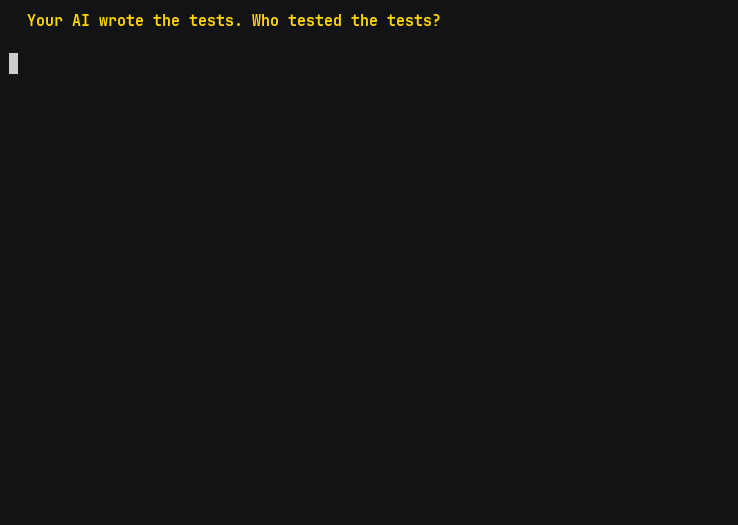

Coverage measures what ran — not what would be caught. crucible injects real defects, finds the ones your suite misses, and hands an adversarial Critic the named survivors to kill. Every verdict is mechanical. No model ever grades model output.
rag_guard/guard.py — 57 lines, a guarded-RAG refusal gate. Its suite is green and
well-covered. Then mutation testing injects 71 real defects.

crucible's harden loop kills 24 of the 25. Mutation score 65% → 99%, while line coverage never moves off 97% the entire time.
dry with one mutant still standing, and said so in the receipt.
clean).
Model nondeterminism is real; the receipts record both, not just the flattering one.
No model. No API keys. No spend. Find out what your existing tests miss, on your own repo, in about ten minutes.
git clone https://github.com/Jott2121/crucible && pip install -e "./crucible[dev]" cd /path/to/your-repo-clone # work in a clone: crucible writes scope config crucible scope . --module yourpkg/yourmodule.py mutmut run && mutmut results # survivors = injected bugs your tests never caught
crucible scope detects your layout, writes the mutation scope, and proves a fresh
test file is collectable before anything runs (a canary probe — it refuses with exit 4 rather than
guess). No AI is involved yet: that survivor count is plain mutation testing on your own suite.
crucible harden . --module yourpkg/yourmodule.py \
--tester claude-cli --critic claude-cli --runs-dir ~/.crucible-runs/yourrepo
With claude-cli, model calls run through Claude Code headless on your existing Claude
subscription — $0 metered spend. Every run's meta.json records
billing: max-plan so plan-covered shadow dollars are never mistaken for an invoice.
No subscription? --tester anthropic uses the metered API.
Two agents, one referee. The referee is not a model.
meta.json (models, billing, scope commit), receipt.jsonl (per-round tokens, cost, kills), result.json (verdict).Pre-registered before results existed (experiments/PROTOCOL.md). Five subjects, three arms.
| Hypothesis | Result | Verdict |
|---|---|---|
| H1 — the adversarial loop kills more mutants than one-shot generation | pooled exact McNemar p = 4.9×10⁻³², b = 105, c = 0 |
SUPPORTED |
| H2 — a cross-lineage critic beats a same-lineage critic | p = 0.0625 | NOT SUPPORTED |
H1 replicates the direction established by MuTAP, AdverTest, and Meta's ACH in a new agentic, repo-level, Python setting. We claim the replication, not the idea (RELATED-WORK.md).
Full tables, all three pre-declared views, and cost-per-kill: experiments/RESULTS.md
claude-cli provider has no mechanical truncation check (the CLI exposes no output cap). Disclosed in the provider docstring — and it is exactly the failure mode that produced the H2 artifact above.harden-tests skill enforces that ritual (local branch only, never main).